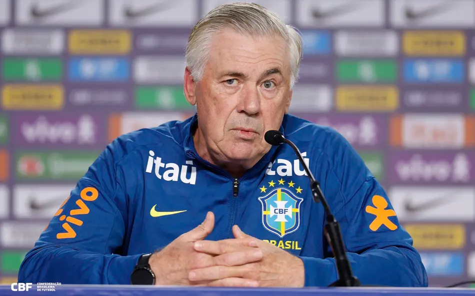

Seleção convocada!
Veja quem são os 26 jogadores escolhidos para representar a amarelinha na busca pelo hexacampeonato.
Leia mais FIFA WORLD CUP 2026
FIFA WORLD CUP 2026
Olá, apaixonado por futebol! Seja muito bem-vindo ao nosso blog da Copa do Mundo. Aqui você vai ficar por dentro de tudo o que rola dentro e fora dos gramados: desde os golaços e resultados surpreendentes até os bastidores das seleções e a festa das torcidas. Vista a camisa, prepare o coração para muita emoção e acompanhe as ultimas noticias:

Veja quem são os 26 jogadores escolhidos para representar a amarelinha na busca pelo hexacampeonato.
Leia mais
Seleção do Irã não poderá se hospedar nos Estados Unidos entre partidas da Copa devido aos conflitos recentes.
Leia mais
O lateral Wesley foi cortado da Copa do Mundo por lesão na coxa e Ederson, da Atalanta, foi o escolhido para ser o substituto.
Leia mais